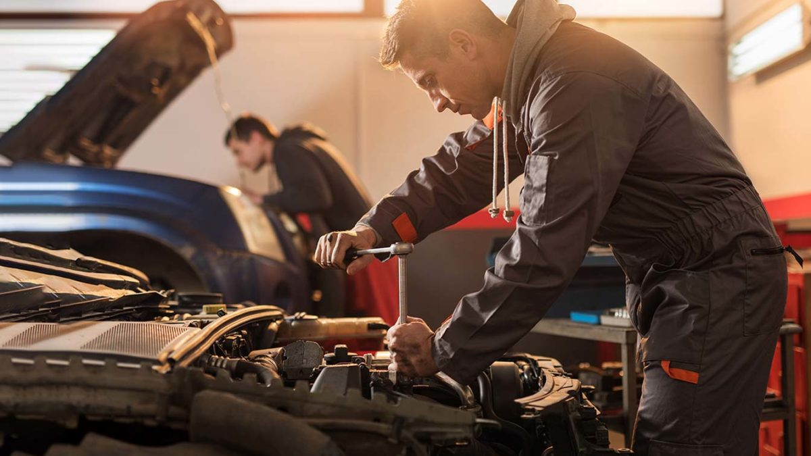
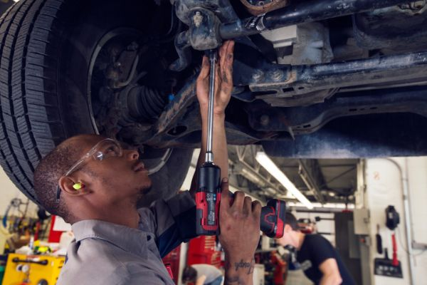

Our Services

Service 1
Apart from oil, your vehicle relies on a variety of other fluids to function efficiently.
These include transmission fluid, brake fluid, coolant,
power steering fluid, and windshield washer fluid.

Service 2
Perform basic care and maintenance, including changing oil, checking fluid levels, and rotating tires.
Repair or replace worn parts, such as brake pads, wheel bearings, and sensors.

Service 3
Although service technicians work on traditional mechanical systems, such as engines,
transmissions, and drivebelts, they also must be familiar with a growing number of electronic systems.
Braking, transmission, and steering systems, for example, are controlled primarily by computers and electronic components.